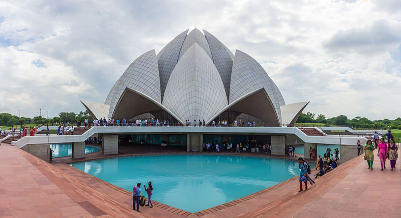

HOME
Lotus Temple

About
The Lotus Temple, located in Delhi, India, is a Bahá'í House of Worship that was dedicated in December 1986, having been completed for a total cost $10 million. It serves as the Mother Temple of the Indian subcontinent. Notable for its flowerlike shape,
it has become a prominent attraction in the city. Like all Bahá'í Houses of Worship, the Lotus Temple is open to all, regardless of religion or any other qualification. The building is composed of 27 free-standing marble-clad "petals" arranged in clusters of three to form nine sides,
with nine doors opening onto a central hall with height of slightly over 40 metres and a capacity of 2,500 people. The Lotus Temple has won numerous architectural awards and been featured in hundreds of newspaper and magazine articles. A 2001 CNN report referred to it as the most visited building in the world.
All Bahá'í Houses of Worship, including the Lotus Temple, share certain architectural elements, some of which are specified by Bahá'í scripture. `Abdu'l-Bahá, the son of the founder of the religion, stipulated that an essential architectural character of a House of Worship is a nine sided circular shape.
While all current Bahá'í Houses of Worship have a dome, this is not regarded as an essential part of their architecture. Bahá'í scripture also states that no pictures, statues or images be displayed within the House of Worship and no pulpits or altars be incorporated as an architectural feature (readers may stand behind simple portable lecture stands).